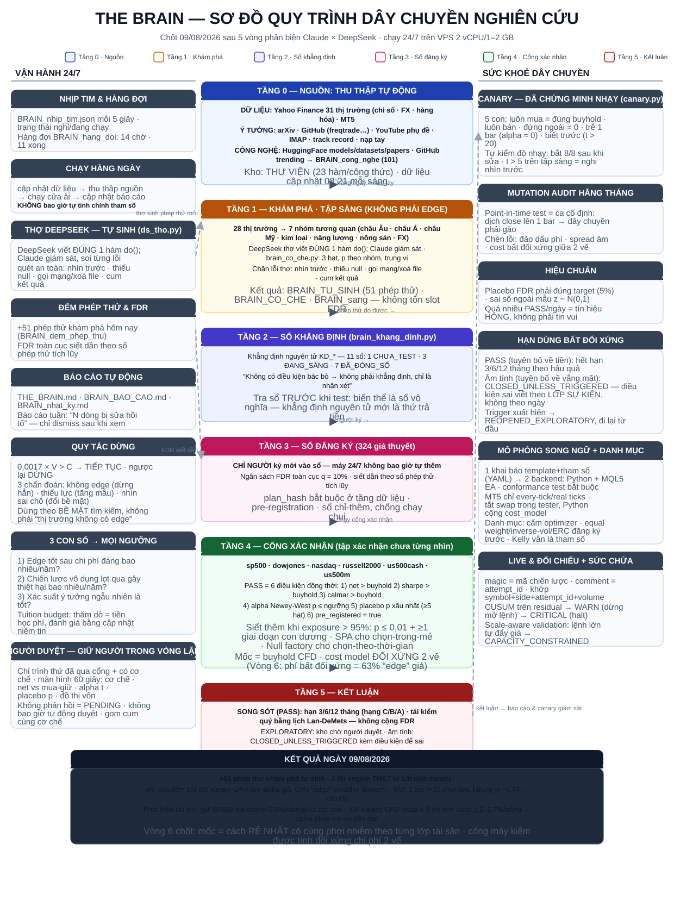
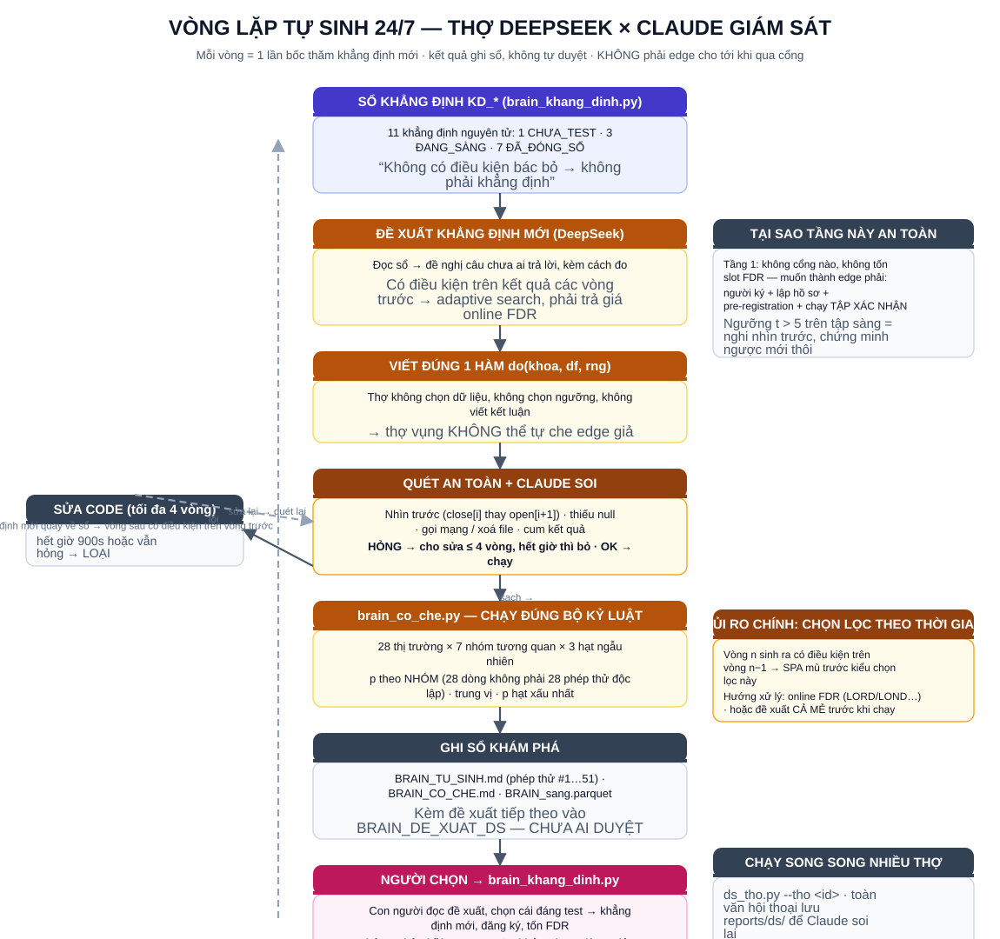
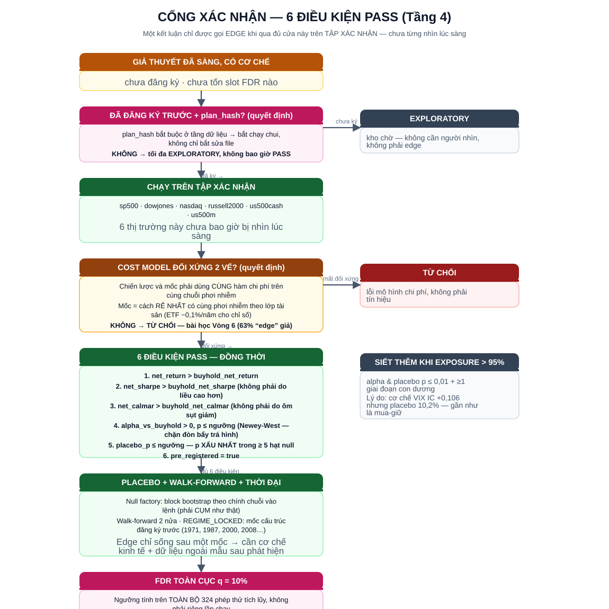

1 · Tổng quan dây chuyền
Từ nguồn → khám phá (tập sàng 28 thị trường) → sổ khẳng định → sổ đăng ký → cổng xác nhận → kết luận. Kèm hai luồng bên: vận hành 24/7 và sức khoẻ dây chuyền.

2 · Vòng lặp tự sinh 24/7
Thợ DeepSeek viết đúng một hàm do(), Claude giám sát; mỗi vòng là một lần bốc thăm khẳng định mới, kết quả ghi sổ khám phá — chưa phải edge.

3 · Cổng PASS (6 điều kiện)
Muốn gọi là edge phải qua đủ cửa trên tập xác nhận chưa từng nhìn: đăng ký trước, cost model đối xứng, 6 điều kiện PASS, placebo + walk-forward, FDR toàn cục.
